Introduction
This package is a subsection extracted from my personal toolkit.
It was created to improve upon some shortcomings in [0.6.4]ggsignif::geom_signif() and [0.6.0]ggpubr::stat_compare_means():
- Inability to adapt stably to faceting.
- Inability to perform layer-level P-value adjustment (ggpubr can achieve panel-level adjustment).
- Failure to perform statistical tests smoothly in the absence of some groupings. This is often the cause of poor faceting performance.
Usually you do not need to specify the test method, you only need to tell stat_compare() whether you want to perform a parametric test or a nonparametric test, and stat_compare() will automatically choose the appropriate test method based on your data. For comparisons between two groups, the p-value is calculated by t-test (parametric) or Wilcoxon rank sum test (nonparametric). For comparisons among more than two groups, the p-value is calculated by One-way ANOVA (parametric) or Kruskal-Wallis test (nonparametric).
Installation
You can install the released version of ggcompare from CRAN with:
install.packages("ggcompare")You can install the development version of ggcompare from GitHub with:
# install.packages("devtools")
devtools::install_github("HMU-WH/ggcompare")Basic
p <- ggplot(mpg, aes(class, displ, color = class)) +
geom_boxplot(show.legend = FALSE) +
theme_test()- Global comparison: Each x has only one group.
p + stat_compare()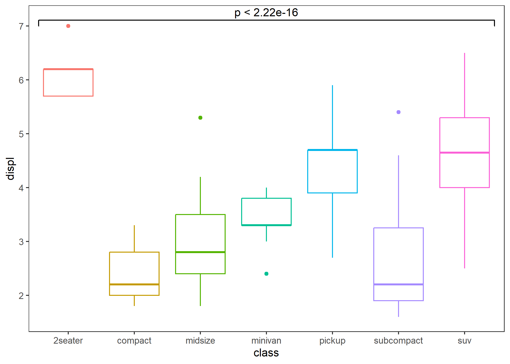
# If you just want to display text, you can set parameters "bracket" to FALSE.
p + stat_compare(bracket = FALSE)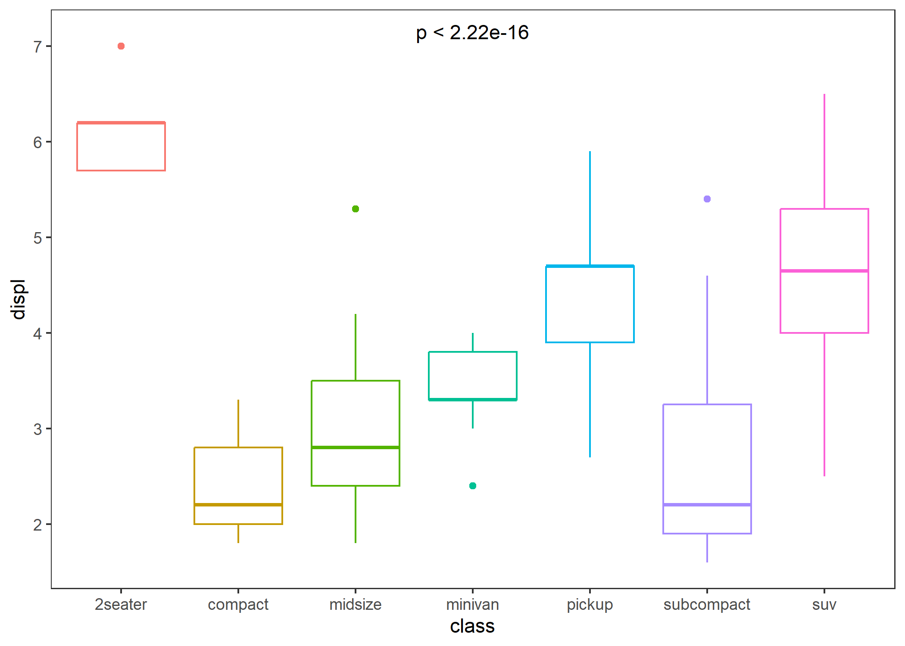
# If you want to display the test method, you can do this.
p + stat_compare(aes(label = after_stat(sprintf("%s: %s", method, label))))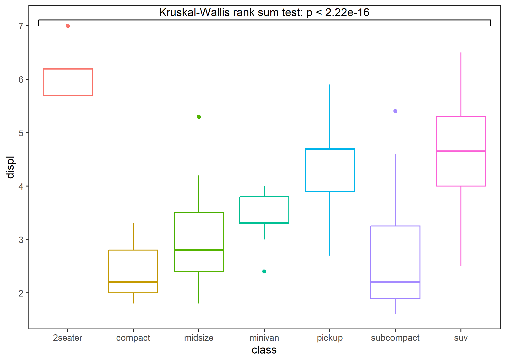
- Comparison between two groups: specify a reference group.
p + stat_compare(ref_group = "minivan")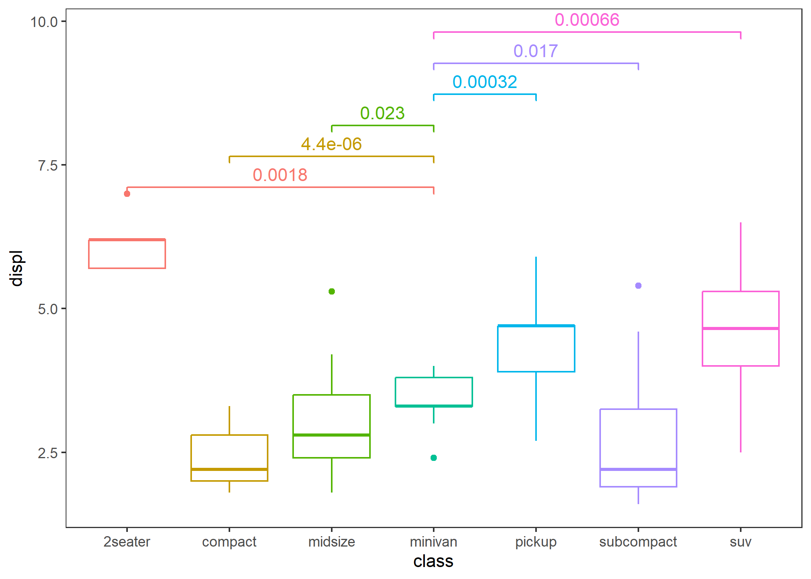
# If you only want to display the p-value less or equal to 0.01, you can do this.
p + stat_compare(ref_group = "minivan", cutoff = 0.01)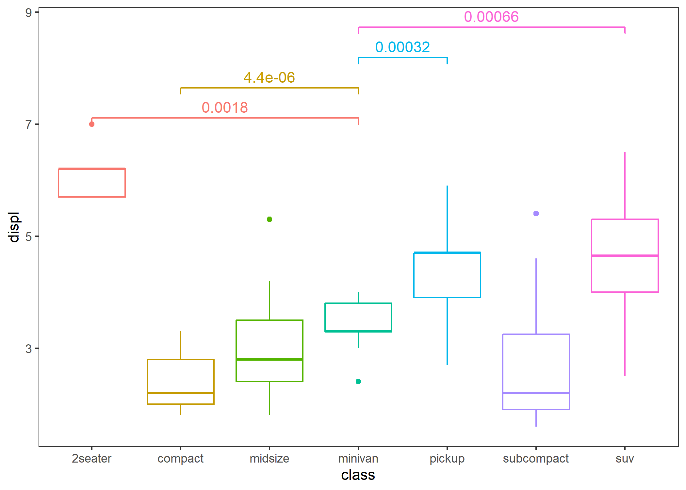
# if you want to display the significance level, you can do this.
p + stat_compare(ref_group = "minivan", breaks = c(0, 0.001, 0.01, 0.05, 1))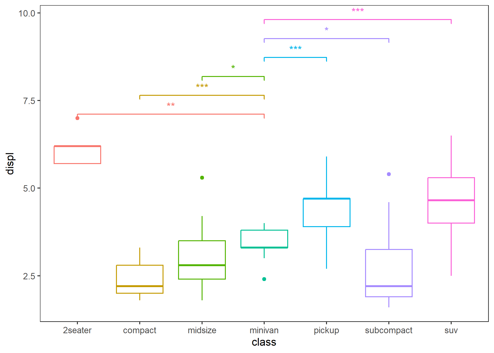
- Comparison between two groups: specify the comparison group.
p + stat_compare(tip_length = 0.05,
step_increase = 0,
comparisons = list(c("compact", "midsize"), c("pickup", "suv")),
arrow = grid::arrow(type = "closed", length = unit(0.1, "inches"))) # Yeah, this supports adding arrows.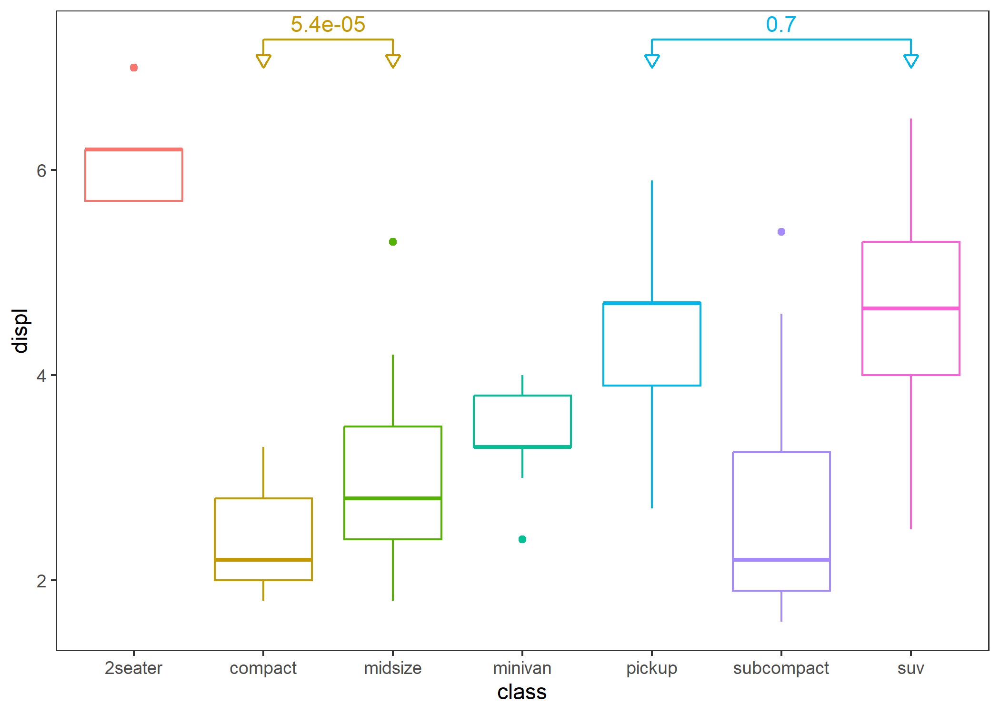
- Within-group (grouped by the x-axis) population comparison.
ggplot(mpg, aes(drv, displ, fill = class)) +
geom_boxplot() +
stat_compare() +
stat_compare(aes(group = drv), nudge = 0.1, color = "gray") + # add global comparison
theme_test()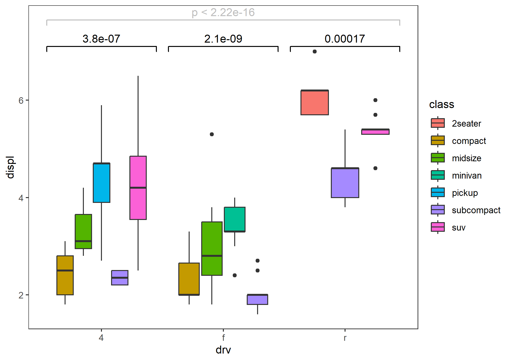
Enhancement
- Better adaptation to faceting.
p <- ggplot(mpg, aes(drv, displ)) +
geom_boxplot() +
facet_grid(cols = vars(class), scales = "free") +
theme_test() +
theme(plot.title = element_text(size = 20))
comparisons <- combn(unique(mpg$drv), 2, simplify = FALSE)
p1 <- p + stat_compare(comparisons = comparisons) +
ggtitle("ggcompare::stat_compare")
# missing test information in some panels
p2 <- p + ggsignif::geom_signif(comparisons = comparisons, step_increase = 0.1) +
ggtitle("ggsignif::geom_signif")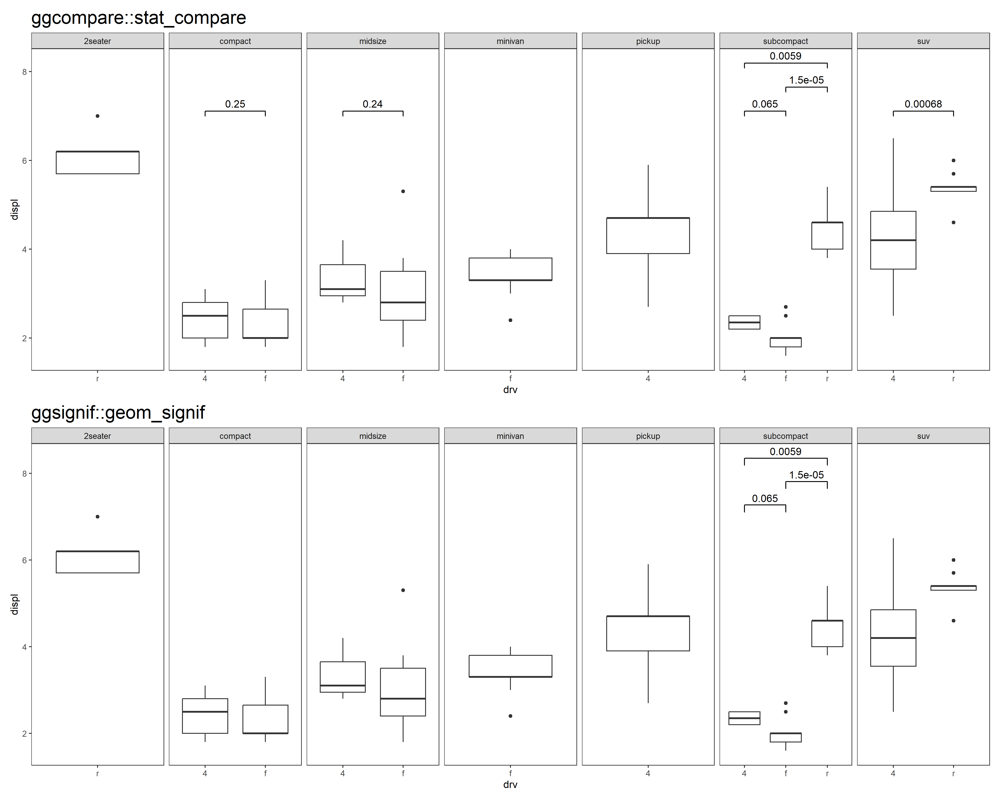
p <- ggplot(mpg, aes(class, displ)) +
geom_boxplot() +
facet_grid(cols = vars(cyl), scales = "free") +
theme_test() +
theme(plot.title = element_text(size = 20),
axis.text.x = element_text(angle = 45, hjust = 1))
p3 <- p + stat_compare() + ggtitle("ggcompare::stat_compare")
# missing test information in all panels
p4 <- p + ggpubr::stat_compare_means() + ggtitle("ggpubr::stat_compare_means")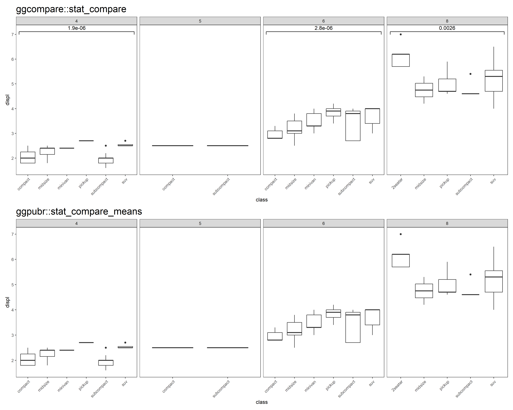
- P-value correction
# Layer-level
p5 <- p + stat_compare(ref_group = 1, correction = "fdr") + ggtitle("Layer-level P-value adjustment")
# Panel-level
p6 <- p + stat_compare(ref_group = 1, correction = "fdr", panel_indep = TRUE) + ggtitle("Panel-level P-value adjustment")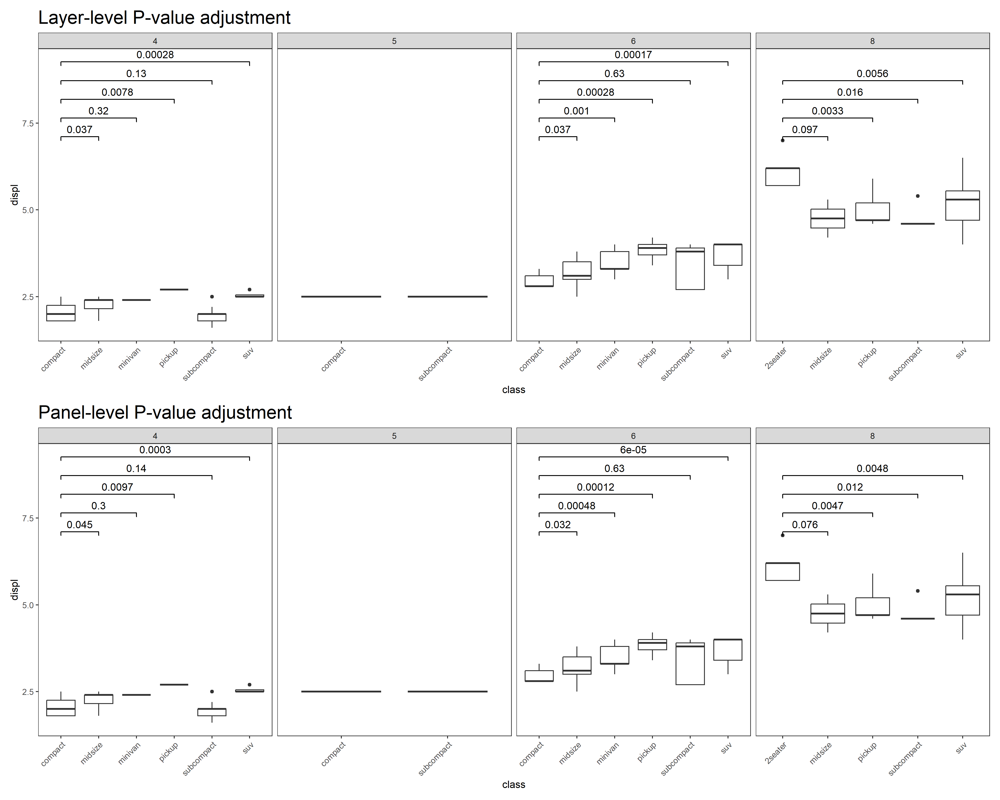